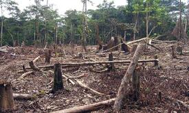
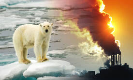
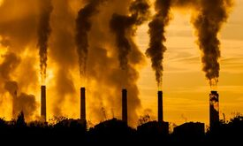
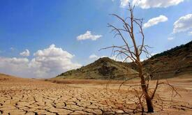
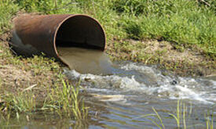
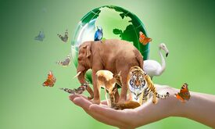

¿Qué es el Medio Ambiente?
El medio ambiente es el espacio en el que se desarrolla la vida de los organismos y que permite su interacción. Está conformado por seres vivos (factores bióticos), por elementos sin vida (factores abióticos) y por elementos artificiales creados por el hombre...
Leer más...- 
Deforestación
La deforestación se puede producir por causas naturales o a causa de las actividades del ser humano. Un incendio, sin ir más lejos, que produce deforestación puede tener su origen en el hombre o ser provocado por la naturaleza, como por ejemplo al caer un rayo en un árbol...
Leer más... - 
Calentamiento Global
El calentamiento global es el aumento en el largo plazo de la temperatura media del sistema climático de la Tierra. Este fenómeno es un aspecto primordial del cambio climático actual, demostrado por la medición directa de la temperatura y de varios efectos del calentamiento...
Leer más.. - 
Contaminación del Aire
La contaminación del aire es uno de los principales retos a los que nos enfrentamos. Los efectos de la contaminación atmosférica pueden ser irreversibles para la vida en el planeta, por lo que hay que trabajar para evitar, reducir...
Leer más..
- 
Degradación del Suelo
La vida en tierra firme depende del suelo. Con contadas excepciones, todas las plantas requieren de este recurso para sobrevivir. El suelo almacena el agua disponible para la vegetación y cobija a los organismos que lo habitan; su pérdida es irreversible...
Leer más.. - 
Contaminación Hídrica
La contaminación hídrica o la contaminación del agua es una modificación de esta, que la vuelve impropia o peligrosa para el consumo, la industria, la agricultura, la pesca y las actividades, así como para los animales Es decir, es agua tóxica que no se puede...
Leer más.. - 
Extinción de las Especies
La extinción es la desaparición total de una especie en el planeta. Durante la larga historia del planeta han habido muchas extinciones causadas por cambios climáticos, vulcanismo, inundaciones, sequías Sin embargo, en los últimos años la gran mayoría de las ...
Leer más..